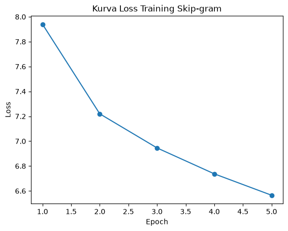
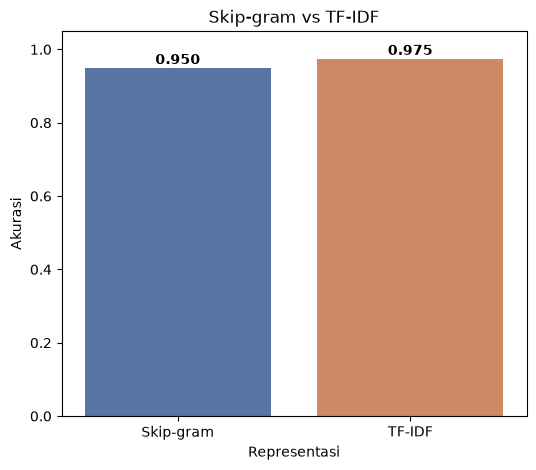
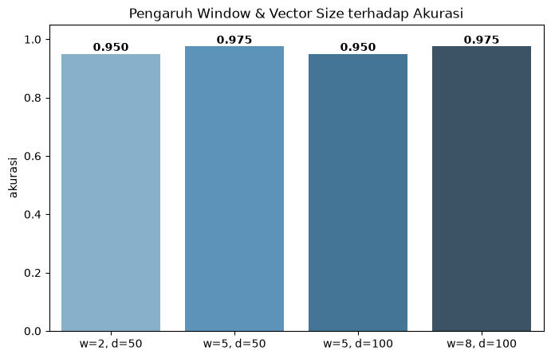

Klasifikasi dengan Skip-gram vs TF-IDF#
Notebook ini membangun Skip-gram dari nol dengan numpy lalu menerapkannya ke seluruh 200 dokumen untuk klasifikasi, dan membandingkannya dengan TF-IDF.
Alur:
200 dokumen bersih
| 1. Tokenisasi
| 2. Vocabulary (word2idx, idx2word)
| 3. Pasangan (target, context) dari window
| 4. Konsep one-hot + inisialisasi bobot W1, W2
| 5. Training: forward -> softmax -> loss -> gradien -> update
| 6. Embedding = W1 -> vektor dokumen = rata-rata vektor kata
| 7. Klasifikasi Naive Bayes: Skip-gram vs TF-IDF
| 8. Eksperimen window & vector_size
| 9. Grid Search
| 10. Simpan model (joblib)
Catatan teknis: one-hot literal untuk semua pasangan butuh memori sangat besar (ukuran = jumlah pasangan x jumlah kata unik). Karena itu konsepnya didemokan kecil dulu, sedangkan komputasi aslinya memakai index lookup (W1[idx]) yang hasilnya identik dengan one_hot @ W1, ditambah mini-batch.
0. Import Library & Muat Data#
import pandas as pd
import numpy as np
import matplotlib.pyplot as plt
import seaborn as sns
from collections import Counter
from sklearn.model_selection import train_test_split, GridSearchCV
from sklearn.naive_bayes import GaussianNB, MultinomialNB
from sklearn.metrics import accuracy_score, classification_report
from sklearn.feature_extraction.text import TfidfVectorizer
import joblib
df = pd.read_excel("../data/dataset_berita_200_bersih.xlsx")
print("Dataset dimuat:", df.shape)
Dataset dimuat: (200, 4)
df[["id", "label"]].head(3)
| id | label | |
|---|---|---|
| 0 | 1 | sport |
| 1 | 2 | sport |
| 2 | 3 | sport |
1. Tokenisasi#
teks_bersih sudah dipisah spasi dari tahap Preprocessing, jadi tinggal di-split() menjadi daftar kata per dokumen.
daftar_token = [teks.split() for teks in df["teks_bersih"]]
print("Jumlah dokumen:", len(daftar_token))
print("Dokumen 0 (10 kata awal):", daftar_token[0][:10])
Jumlah dokumen: 200
Dokumen 0 (10 kata awal): ['chef', 'de', 'mission', 'cdm', 'indonesia', 'todotua', 'pasaribu', 'terus', 'memonitoring', 'kondisi']
2. Vocabulary#
Langkah: hitung frekuensi kata, buang kata yang terlalu jarang (min_count), lalu beri setiap kata sebuah nomor (indeks).
frekuensi = Counter()
for dok in daftar_token:
frekuensi.update(dok)
print("Kata unik (sebelum disaring):", len(frekuensi))
print("10 kata paling sering:", frekuensi.most_common(10))
Kata unik (sebelum disaring): 8121
10 kata paling sering: [('yang', 1453), ('dan', 1316), ('di', 1299), ('ini', 722), ('untuk', 693), ('dari', 635), ('dengan', 628), ('dalam', 527), ('juga', 480), ('pada', 444)]
MIN_COUNT = 2
vocab = sorted(k for k, f in frekuensi.items() if f >= MIN_COUNT)
V = len(vocab)
print("Ukuran vocabulary V (frekuensi >= 2):", V)
Ukuran vocabulary V (frekuensi >= 2): 4697
word2idx = {kata: i for i, kata in enumerate(vocab)}
idx2word = {i: kata for kata, i in word2idx.items()}
print("Contoh word2idx:", list(word2idx.items())[:5])
Contoh word2idx: [('10k', 0), ('1s', 1), ('3s', 2), ('3x3', 3), ('3x3a', 4)]
Ubah setiap dokumen dari daftar kata menjadi daftar indeks (kata yang tidak ada di vocabulary dibuang).
dokumen_idx = [[word2idx[k] for k in dok if k in word2idx] for dok in daftar_token]
print("Dokumen 0 sebagai indeks:", dokumen_idx[0][:10])
Dokumen 0 sebagai indeks: [2778, 682, 1489, 4439, 3039, 4393, 2430, 1984, 841, 2842]
3. Pasangan (Target, Context) dengan Window#
Untuk setiap kata target, kata-kata di sekitarnya dalam jarak window menjadi context. Skip-gram belajar memprediksi context dari target.
def buat_pasangan(dokumen_idx, window):
target, konteks = [], []
for dok in dokumen_idx:
for i, t in enumerate(dok):
awal = max(0, i - window)
akhir = min(len(dok), i + window + 1)
for j in range(awal, akhir):
if j != i:
target.append(t)
konteks.append(dok[j])
return np.array(target), np.array(konteks)
Demo kecil pada 5 kata pertama dokumen 0 (window=2):
t_demo, c_demo = buat_pasangan([dokumen_idx[0][:5]], window=2)
for a, b in zip(t_demo, c_demo):
print(f"{idx2word[a]:>15} -> {idx2word[b]}")
mission -> cdm
mission -> indonesia
cdm -> mission
cdm -> indonesia
cdm -> todotua
indonesia -> mission
indonesia -> cdm
indonesia -> todotua
indonesia -> pasaribu
todotua -> cdm
todotua -> indonesia
todotua -> pasaribu
pasaribu -> indonesia
pasaribu -> todotua
Sekarang untuk seluruh 200 dokumen (window=2):
WINDOW = 2
target, konteks = buat_pasangan(dokumen_idx, WINDOW)
print("Jumlah pasangan (target, context):", len(target))
Jumlah pasangan (target, context): 247936
4. One-Hot (Konsep) & Inisialisasi Bobot#
W1 (V x D): matriks embedding. Baris ke-
i= vektor kata ke-i. Inilah hasil akhir yang kita pakai.W2 (D x V): matriks output untuk memprediksi context.
D = 50
rng = np.random.default_rng(42)
W1 = rng.normal(0, 0.1, (V, D))
W2 = rng.normal(0, 0.1, (D, V))
print("W1:", W1.shape, "| W2:", W2.shape)
W1: (4697, 50) | W2: (50, 4697)
Demo one-hot: vektor berisi nol semua, hanya satu posisi bernilai 1 (posisi kata tersebut).
idx_demo = target[0]
x_onehot = np.zeros(V)
x_onehot[idx_demo] = 1
print("Kata:", idx2word[idx_demo], "| indeks:", idx_demo)
print("Panjang vektor one-hot:", len(x_onehot), "| jumlah elemen bernilai 1:", int(x_onehot.sum()))
Kata: mission | indeks: 2778
Panjang vektor one-hot: 4697 | jumlah elemen bernilai 1: 1
Kenapa tidak dipakai langsung? Hitung memori jika semua pasangan dijadikan one-hot:
memori_gb = len(target) * V * 8 / 1e9
print(f"One-hot semua pasangan butuh sekitar {memori_gb:.1f} GB")
One-hot semua pasangan butuh sekitar 9.3 GB
Trik: mengalikan one-hot dengan W1 sama saja dengan mengambil satu baris W1. Buktinya:
hasil_matmul = x_onehot @ W1
hasil_lookup = W1[idx_demo]
print("Hasil sama persis?", np.allclose(hasil_matmul, hasil_lookup))
Hasil sama persis? True
5. Training Skip-gram#
Kita jalankan satu langkah training dulu (satu mini-batch), tiap bagian di sel terpisah.
5.1 Fungsi softmax (mengubah skor menjadi probabilitas yang jumlahnya 1)
def softmax(z):
z = z - z.max(axis=1, keepdims=True) # stabilitas numerik
e = np.exp(z)
return e / e.sum(axis=1, keepdims=True)
5.2 Ambil satu mini-batch (256 pasangan acak)
UKURAN_BATCH = 256
ids = rng.permutation(len(target))[:UKURAN_BATCH]
t, c = target[ids], konteks[ids]
B = len(ids)
print("Batch target:", t.shape, "| batch context:", c.shape)
Batch target: (256,) | batch context: (256,)
5.3 Forward pass: ambil vektor target (hidden layer h), hitung skor ke semua kata, ubah jadi probabilitas
h = W1[t] # (B, D)
skor = h @ W2 # (B, V)
probs = softmax(skor) # (B, V)
print("h:", h.shape, "| skor:", skor.shape, "| jumlah probabilitas baris 0:", probs[0].sum().round(4))
h: (256, 50) | skor: (256, 4697) | jumlah probabilitas baris 0: 1.0
5.4 Loss (cross-entropy): seberapa kecil probabilitas yang diberikan model pada context yang benar
loss = -np.mean(np.log(probs[np.arange(B), c] + 1e-9))
print("Loss awal:", round(loss, 4), "| loss acak seharusnya sekitar ln(V) =", round(np.log(V), 4))
Loss awal: 8.4562 | loss acak seharusnya sekitar ln(V) = 8.4547
5.5 Gradien (backward pass)
dskor = probs.copy()
dskor[np.arange(B), c] -= 1 # prediksi dikurangi target one-hot
dskor /= B
dW2 = h.T @ dskor # (D, V)
dh = dskor @ W2.T # (B, D)
print("dW2:", dW2.shape, "| dh:", dh.shape)
dW2: (50, 4697) | dh: (256, 50)
5.6 Update bobot (gradient descent). np.add.at dipakai karena satu kata bisa muncul berkali-kali dalam satu batch.
LR = 5.0
W2 -= LR * dW2
np.add.at(W1, t, -LR * dh)
5.7 Cek: loss pada batch yang sama seharusnya turun
probs_baru = softmax(W1[t] @ W2)
loss_baru = -np.mean(np.log(probs_baru[np.arange(B), c] + 1e-9))
print(f"Loss sebelum: {loss:.4f} -> sesudah: {loss_baru:.4f}")
Loss sebelum: 8.4562 -> sesudah: 8.4366
5.8 Bungkus Jadi Fungsi#
Langkah 5.3 sampai 5.6 dikemas jadi dua fungsi kecil, lalu diulang untuk semua mini-batch dan beberapa epoch.
def hitung_gradien(W1, W2, t, c):
B = len(t)
h = W1[t]
probs = softmax(h @ W2)
loss = -np.mean(np.log(probs[np.arange(B), c] + 1e-9))
dskor = probs
dskor[np.arange(B), c] -= 1
dskor /= B
return loss, h.T @ dskor, dskor @ W2.T # loss, dW2, dh
def latih_skipgram(target, konteks, V, D, epochs=5, lr=5.0, ukuran_batch=256, seed=42):
rng = np.random.default_rng(seed)
W1 = rng.normal(0, 0.1, (V, D))
W2 = rng.normal(0, 0.1, (D, V))
riwayat_loss = []
for epoch in range(epochs):
urutan = rng.permutation(len(target))
total_loss = 0
for mulai in range(0, len(urutan), ukuran_batch):
ids = urutan[mulai:mulai + ukuran_batch]
loss, dW2, dh = hitung_gradien(W1, W2, target[ids], konteks[ids])
W2 -= lr * dW2
np.add.at(W1, target[ids], -lr * dh)
total_loss += loss * len(ids)
riwayat_loss.append(total_loss / len(urutan))
return W1, riwayat_loss
5.9 Latih model baseline (window=2, D=50)
W1_base, loss_base = latih_skipgram(target, konteks, V, D=50, epochs=5)
for i, l in enumerate(loss_base, 1):
print(f"Epoch {i}: loss = {l:.4f}")
Epoch 1: loss = 7.9398
Epoch 2: loss = 7.2196
Epoch 3: loss = 6.9456
Epoch 4: loss = 6.7373
Epoch 5: loss = 6.5653
plt.plot(range(1, len(loss_base) + 1), loss_base, marker="o")
plt.xlabel("Epoch")
plt.ylabel("Loss")
plt.title("Kurva Loss Training Skip-gram")
plt.show()

5.10 Cek hasil: kata-kata yang mirip seharusnya berdekatan (cosine similarity)
def kata_terdekat(kata, W1, n=5):
v = W1[word2idx[kata]]
sim = (W1 @ v) / (np.linalg.norm(W1, axis=1) * np.linalg.norm(v) + 1e-9)
urut = np.argsort(-sim)[1:n + 1]
return [(idx2word[i], round(float(sim[i]), 3)) for i in urut]
kata_uji = vocab[0]
print("Kata:", kata_uji)
print("Terdekat:", kata_terdekat(kata_uji, W1_base))
Kata: 10k
Terdekat: [('alti', 0.716), ('menggelar', 0.697), ('international', 0.689), ('popprov', 0.654), ('banten', 0.644)]
6. Vektor Dokumen (Mean Pooling)#
Satu dokumen = rata-rata vektor semua kata di dalamnya, sehingga setiap dokumen punya panjang tetap (D).
def vektor_dokumen(dok_idx, W1):
if len(dok_idx) == 0:
return np.zeros(W1.shape[1])
return W1[dok_idx].mean(axis=0)
X_skipgram = np.array([vektor_dokumen(d, W1_base) for d in dokumen_idx])
print("Ukuran X_skipgram:", X_skipgram.shape)
Ukuran X_skipgram: (200, 50)
7. Klasifikasi: Skip-gram vs TF-IDF#
Pembagian data latih/uji dibuat sekali dan dipakai untuk kedua representasi supaya perbandingannya adil.
label = df["label"]
indeks_latih, indeks_uji = train_test_split(df.index, test_size=0.2, stratify=label, random_state=42)
y_latih, y_uji = label.loc[indeks_latih], label.loc[indeks_uji]
print("Data latih:", len(indeks_latih), "| Data uji:", len(indeks_uji))
Data latih: 160 | Data uji: 40
7.1 Skip-gram + GaussianNB
X_latih_sg, X_uji_sg = X_skipgram[indeks_latih], X_skipgram[indeks_uji]
model_sg = GaussianNB()
model_sg.fit(X_latih_sg, y_latih)
GaussianNB()In a Jupyter environment, please rerun this cell to show the HTML representation or trust the notebook.
On GitHub, the HTML representation is unable to render, please try loading this page with nbviewer.org.
Parameters
Fitted attributes
| Name | Type | Value |
|---|---|---|
|
class_count_
class_count_: ndarray of shape (n_classes,) number of training samples observed in each class. |
ndarray[float64](2,) | [80.,80.] |
|
class_prior_
class_prior_: ndarray of shape (n_classes,) probability of each class. |
ndarray[float64](2,) | [0.5,0.5] |
|
classes_
classes_: ndarray of shape (n_classes,) class labels known to the classifier. |
ndarray[<U7](2,) | ['finance','sport'] |
|
epsilon_
epsilon_: float absolute additive value to variances. |
float64 | 2.396e-11 |
|
n_features_in_
n_features_in_: int Number of features seen during :term:`fit`. .. versionadded:: 0.24 |
int | 50 |
|
theta_
theta_: ndarray of shape (n_classes, n_features) mean of each feature per class. |
ndarray[float64](2, 50) | [[-0.19, 0.03,-0.11,...,-0. ,-0.05,-0.13], [-0.36, 0.06, 0.06,...,-0.09, 0.03,-0.03]] |
|
var_
var_: ndarray of shape (n_classes, n_features) Variance of each feature per class. .. versionadded:: 1.0 |
ndarray[float64](2, 50) | [[0.01,0.01,0. ,...,0. ,0. ,0. ], [0. ,0. ,0.01,...,0. ,0. ,0.01]] |
akurasi_sg = accuracy_score(y_uji, model_sg.predict(X_uji_sg))
print(f"Akurasi Skip-gram: {akurasi_sg:.4f}")
Akurasi Skip-gram: 0.9500
7.2 TF-IDF + MultinomialNB
vectorizer_tfidf = TfidfVectorizer(min_df=3)
X_tfidf_full = vectorizer_tfidf.fit_transform(df["teks_bersih"])
print("Ukuran matriks TF-IDF:", X_tfidf_full.shape)
Ukuran matriks TF-IDF: (200, 2556)
X_latih_tfidf, X_uji_tfidf = X_tfidf_full[indeks_latih], X_tfidf_full[indeks_uji]
model_tfidf = MultinomialNB()
model_tfidf.fit(X_latih_tfidf, y_latih)
MultinomialNB()In a Jupyter environment, please rerun this cell to show the HTML representation or trust the notebook.
On GitHub, the HTML representation is unable to render, please try loading this page with nbviewer.org.
Parameters
Fitted attributes
akurasi_tfidf = accuracy_score(y_uji, model_tfidf.predict(X_uji_tfidf))
print(f"Akurasi TF-IDF: {akurasi_tfidf:.4f}")
Akurasi TF-IDF: 0.9750
7.3 Ringkasan perbandingan
ringkasan = pd.DataFrame({
"Representasi": ["Skip-gram", "TF-IDF"],
"Jumlah Fitur": [X_skipgram.shape[1], X_tfidf_full.shape[1]],
"Akurasi": [akurasi_sg, akurasi_tfidf],
})
ringkasan
| Representasi | Jumlah Fitur | Akurasi | |
|---|---|---|---|
| 0 | Skip-gram | 50 | 0.950 |
| 1 | TF-IDF | 2556 | 0.975 |
fig, ax = plt.subplots(figsize=(6, 5))
sns.barplot(data=ringkasan, x="Representasi", y="Akurasi", hue="Representasi", palette=["#4C72B0", "#DD8452"], legend=False, ax=ax)
for i, v in enumerate(ringkasan["Akurasi"]):
ax.text(i, v + 0.01, f"{v:.3f}", ha="center", fontweight="bold")
ax.set_ylim(0, 1.05)
ax.set_title("Skip-gram vs TF-IDF")
plt.show()

8. Eksperimen window dan vector_size#
window: jarak kata sekitar yang dianggap context.
vector_size: dimensi embedding.
Satu fungsi kecil melakukan seluruh pipeline (pasangan, training, vektor dokumen, klasifikasi) untuk satu kombinasi parameter.
def evaluasi_skipgram(window, vector_size, epochs=5):
t, c = buat_pasangan(dokumen_idx, window)
W1, _ = latih_skipgram(t, c, V, vector_size, epochs=epochs)
X = np.array([vektor_dokumen(d, W1) for d in dokumen_idx])
clf = GaussianNB().fit(X[indeks_latih], y_latih)
return accuracy_score(y_uji, clf.predict(X[indeks_uji]))
kombinasi = [(2, 50), (5, 50), (5, 100), (8, 100)]
hasil = []
for w, d in kombinasi:
akurasi = evaluasi_skipgram(w, d)
hasil.append({"window": w, "vector_size": d, "akurasi": akurasi})
print(f"window={w}, vector_size={d} -> akurasi: {akurasi:.4f}")
window=2, vector_size=50 -> akurasi: 0.9500
window=5, vector_size=50 -> akurasi: 0.9750
window=5, vector_size=100 -> akurasi: 0.9500
window=8, vector_size=100 -> akurasi: 0.9750
df_eksperimen = pd.DataFrame(hasil)
df_eksperimen
| window | vector_size | akurasi | |
|---|---|---|---|
| 0 | 2 | 50 | 0.950 |
| 1 | 5 | 50 | 0.975 |
| 2 | 5 | 100 | 0.950 |
| 3 | 8 | 100 | 0.975 |
label_kombinasi = [f"w={r.window}, d={r.vector_size}" for r in df_eksperimen.itertuples()]
fig, ax = plt.subplots(figsize=(8, 5))
sns.barplot(x=label_kombinasi, y=df_eksperimen["akurasi"], hue=label_kombinasi, palette="Blues_d", legend=False, ax=ax)
for i, v in enumerate(df_eksperimen["akurasi"]):
ax.text(i, v + 0.01, f"{v:.3f}", ha="center", fontweight="bold")
ax.set_ylim(0, 1.05)
ax.set_title("Pengaruh Window & Vector Size terhadap Akurasi")
plt.show()

terbaik = df_eksperimen.loc[df_eksperimen["akurasi"].idxmax()]
WINDOW_FINAL = int(terbaik["window"])
VECTOR_SIZE_FINAL = int(terbaik["vector_size"])
print(f"Kombinasi terbaik: window={WINDOW_FINAL}, vector_size={VECTOR_SIZE_FINAL}")
Kombinasi terbaik: window=5, vector_size=50
9. Latih Ulang Skip-gram Final (Parameter Terbaik)#
target_f, konteks_f = buat_pasangan(dokumen_idx, WINDOW_FINAL)
print("Jumlah pasangan:", len(target_f))
Jumlah pasangan: 616840
W1_final, loss_final = latih_skipgram(target_f, konteks_f, V, VECTOR_SIZE_FINAL, epochs=10)
print("Loss epoch pertama:", round(loss_final[0], 4), "| epoch terakhir:", round(loss_final[-1], 4))
Loss epoch pertama: 7.5674 | epoch terakhir: 6.235
X_skipgram_final = np.array([vektor_dokumen(d, W1_final) for d in dokumen_idx])
model_sg_final = GaussianNB().fit(X_skipgram_final[indeks_latih], y_latih)
pred_sg_final = model_sg_final.predict(X_skipgram_final[indeks_uji])
akurasi_sg_final = accuracy_score(y_uji, pred_sg_final)
print(f"Akurasi Skip-gram final: {akurasi_sg_final:.4f}")
Akurasi Skip-gram final: 0.9750
print(classification_report(y_uji, pred_sg_final))
precision recall f1-score support
finance 0.95 1.00 0.98 20
sport 1.00 0.95 0.97 20
accuracy 0.97 40
macro avg 0.98 0.97 0.97 40
weighted avg 0.98 0.97 0.97 40
10. Grid Search: Hyperparameter Tuning#
GridSearchCV mencoba semua kandidat parameter dengan cross-validation (cv=5) pada data latih.
10.1 Tuning alpha (smoothing) pada TF-IDF + MultinomialNB
param_grid_tfidf = {"alpha": [0.01, 0.1, 0.5, 1.0, 2.0]}
grid_tfidf = GridSearchCV(MultinomialNB(), param_grid_tfidf, cv=5, scoring="accuracy")
grid_tfidf.fit(X_latih_tfidf, y_latih)
GridSearchCV(cv=5, estimator=MultinomialNB(),
param_grid={'alpha': [0.01, 0.1, 0.5, 1.0, 2.0]},
scoring='accuracy')In a Jupyter environment, please rerun this cell to show the HTML representation or trust the notebook. On GitHub, the HTML representation is unable to render, please try loading this page with nbviewer.org.
Parameters
Fitted attributes
MultinomialNB(alpha=0.01)
Parameters
Fitted attributes
print("Parameter terbaik:", grid_tfidf.best_params_)
print(f"Akurasi CV terbaik: {grid_tfidf.best_score_:.4f}")
Parameter terbaik: {'alpha': 0.01}
Akurasi CV terbaik: 1.0000
model_tfidf_tuned = grid_tfidf.best_estimator_
akurasi_tfidf_tuned = accuracy_score(y_uji, model_tfidf_tuned.predict(X_uji_tfidf))
print(f"Akurasi data uji setelah tuning: {akurasi_tfidf_tuned:.4f} (sebelumnya: {akurasi_tfidf:.4f})")
Akurasi data uji setelah tuning: 0.9500 (sebelumnya: 0.9750)
10.2 Tuning var_smoothing pada Skip-gram + GaussianNB
param_grid_sg = {"var_smoothing": [1e-12, 1e-9, 1e-6, 1e-3, 1e-1]}
grid_sg = GridSearchCV(GaussianNB(), param_grid_sg, cv=5, scoring="accuracy")
grid_sg.fit(X_skipgram_final[indeks_latih], y_latih)
GridSearchCV(cv=5, estimator=GaussianNB(),
param_grid={'var_smoothing': [1e-12, 1e-09, 1e-06, 0.001, 0.1]},
scoring='accuracy')In a Jupyter environment, please rerun this cell to show the HTML representation or trust the notebook. On GitHub, the HTML representation is unable to render, please try loading this page with nbviewer.org.
Parameters
Fitted attributes
GaussianNB(var_smoothing=1e-12)
Parameters
Fitted attributes
| Name | Type | Value |
|---|---|---|
|
class_count_
class_count_: ndarray of shape (n_classes,) number of training samples observed in each class. |
ndarray[float64](2,) | [80.,80.] |
|
class_prior_
class_prior_: ndarray of shape (n_classes,) probability of each class. |
ndarray[float64](2,) | [0.5,0.5] |
|
classes_
classes_: ndarray of shape (n_classes,) class labels known to the classifier. |
ndarray[<U7](2,) | ['finance','sport'] |
|
epsilon_
epsilon_: float absolute additive value to variances. |
float64 | 5.607e-14 |
|
n_features_in_
n_features_in_: int Number of features seen during :term:`fit`. .. versionadded:: 0.24 |
int | 50 |
|
theta_
theta_: ndarray of shape (n_classes, n_features) mean of each feature per class. |
ndarray[float64](2, 50) | [[-0.12, 0.09,-0.1 ,..., 0.02,-0.05,-0.19], [-0.34, 0.11, 0.14,...,-0.14, 0.03,-0.02]] |
|
var_
var_: ndarray of shape (n_classes, n_features) Variance of each feature per class. .. versionadded:: 1.0 |
ndarray[float64](2, 50) | [[0.02,0.02,0.02,...,0.01,0.01,0.02], [0.02,0.01,0.02,...,0.03,0.01,0.02]] |
print("Parameter terbaik:", grid_sg.best_params_)
print(f"Akurasi CV terbaik: {grid_sg.best_score_:.4f}")
Parameter terbaik: {'var_smoothing': 1e-12}
Akurasi CV terbaik: 1.0000
model_sg_tuned = grid_sg.best_estimator_
akurasi_sg_tuned = accuracy_score(y_uji, model_sg_tuned.predict(X_skipgram_final[indeks_uji]))
print(f"Akurasi data uji setelah tuning: {akurasi_sg_tuned:.4f} (sebelumnya: {akurasi_sg_final:.4f})")
Akurasi data uji setelah tuning: 0.9750 (sebelumnya: 0.9750)
11. Simpan Model Terbaik untuk Deployment#
print(f"Skip-gram (tuned): {akurasi_sg_tuned:.4f}")
print(f"TF-IDF (tuned): {akurasi_tfidf_tuned:.4f}")
Skip-gram (tuned): 0.9750
TF-IDF (tuned): 0.9500
if akurasi_tfidf_tuned >= akurasi_sg_tuned:
joblib.dump(model_tfidf_tuned, "../data/model_final.joblib")
joblib.dump(vectorizer_tfidf, "../data/vectorizer_final.joblib")
print("Disimpan: TF-IDF + MultinomialNB")
else:
joblib.dump(model_sg_tuned, "../data/model_final.joblib")
np.save("../data/embedding_W1.npy", W1_final)
joblib.dump(word2idx, "../data/word2idx.joblib")
print("Disimpan: Skip-gram manual + GaussianNB (W1 dan word2idx ikut disimpan)")
Disimpan: Skip-gram manual + GaussianNB (W1 dan word2idx ikut disimpan)
Ringkasan#
Skip-gram dibangun manual dengan numpy: vocabulary, pasangan (target, context), W1 dan W2, softmax, cross-entropy, gradien, update.
One-hot dijelaskan secara konsep; komputasi memakai index lookup
W1[idx](hasil identik denganone_hot @ W1) dan mini-batch agar hemat memori.Vektor dokumen = rata-rata vektor kata; dibandingkan dengan TF-IDF pada pembagian data yang sama.
windowdanvector_sizediatur lewat argumenbuat_pasangan(..., window)danlatih_skipgram(..., D).test_size=0.2: 20% data jadi data uji; jika total data 300, maka latih 240 dan uji 60.Grid Search mencari parameter terbaik secara sistematis dengan cross-validation.